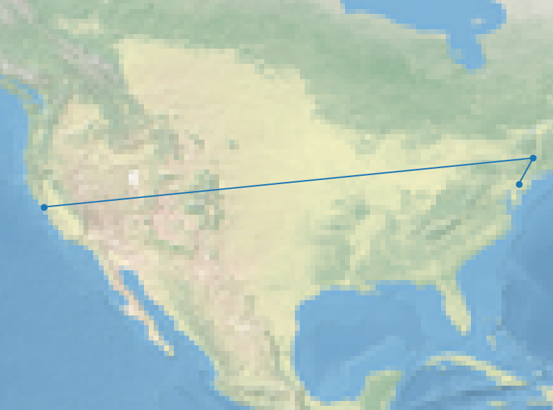

Homework 6: ICMP And Geographic Routing (24 Points)
Chris Tralie
Learning Objectives
- Implement internet communication using sockets in python
- Send and receive binary data over raw sockets according to protocol specifications
- Implement ping functionality using ICMP messages
- Implement traceroute by hacking ping ttls
Description / Overview
We're going to implement two popular command line tools for network diagnostics: ping and traceroute, by sending ICMP messages using raw sockets in python. ping is used to diagnose connectivity to a host, and it returns the round-trip time to the host and back. traceroute is a hack of ping to figure out an approximate route of traffic to a host. It works by incrementally increasing the ttl of ping, forcing TTL expired message to come back from routers on the way to the host.
As you work through this, you should refer to the following references:
Getting Started / What To Submit
You can obtain the starter code for this assignment by using git:
You will be editing the files icmp.py and ping.py, which you'll submit to canvas when you're finished. The bulk of the functionality is will be in icmp.py. The code also comes with a file traceroute.py which you don't have to edit.
Because you'll be sending raw packets, you'll have to run your script in administrator mode however you figured out how to do that in homework 5. As an example of how to run ping, assuming your path is just python, if you type the following in the terminal
then your program should output something like this in an infinite loop:
For traceroute, supposing you execute something like this
then you should expect an output like this (where routes may vary)
For this particular output, the map that pops up looks like this (I queried from the Philadelphia area and ended up in California):
Part 1: ping (10 Points)
First, implement ping functionality by sending an ICMP echo request and reading the response
Your Task
Fill in the method ping in icmp.py. Create the bytes for an ICMP echo request (including the correct checksum), and send this over the raw socket with sock.sendto (noting that the port can be anything since it's irrelevant for ICMP). Then, receive an echo response with sock.recvfrom(1024), and unpack all of the fields. You should time the interval between sending the request and receiving the response using time.time(). For instance
If the socket times out, it will raise an exception. Catch this exception and return None from the method in this case.
After completing the ping method, create an infinite loop in ping.py that calls the ping method repeatedly. Be sure to wait one second (time.sleep(1)) in between iterations to avoid spamming the host! Come up with a random id and seq each time. Validate the result that's returned, splitting into the following cases:
-
It returned
None, in which case you should print that it timed out - The sequence, id, or payload of the response do not match those that were sent along, in which case you should indicate that they don't match
- Everything is cool, in which case you should print out the IP address and the number of milliseconds elapsed
Hints
recvfromreturns the ip header and the ICMP message in one chunk. You should jump to the beginning of the ICMP message before you unpack anything
Part 2: traceroute (8 Points)
Now that we have a working ping, we're going to hack it to give us information about the path that traffic gets routed to a particular host.
Your Task
Fill in the method traceroute in icmp.py. Call ping in a loop, starting with a ttl of 1 and incrementing until the type of the returned ICMP message is ICMP_ECHO_REPLY. As with ping, sleep 1 second in between adjacent queries. In iterations before that, there should be two possibilities:
- You get an ICMP message with a ttl exceeded, which means it didn't make it to the router yet. Print the IP address and time elapsed, add the IP address to a list, increment the ttl, and try again
-
The socket times out. This means that a router blocked outgoing ICMP error messages to conceal its identity. In this case, print out three asterixes, append
Noneto the list of IPs, increment the ttl, and try again
Part 3: Mapping (6 Points)
Now we're going to add a fun embellishment to plot the routes we get on a map. You will make queries to the URL http://ip-api.com/json, which is a service that returns the geographic location of an IP address. For instance, the URL http://ip-api.com/json/185.199.111.153 will return the page
Your Task
Fill in the method plot_ips in icmp.py to plot the longitude/latitude of a list of IP addresses that's passed along (which was returned from a previous call to traceroute). You'll do this by making a call to http://ip-api.com/json with each IP. Skip IPs that are None or which do not return a latitude/longitude from that site. Then, print out the latitude and and longitude locations as a list of [[lon1, lat1], [lon2, lat2], [lon3, lat3], ...]. You can copy this into the viewer below:
Hints
Since we're already done lots of assignments on HTTP requests and responses, feel free to use urllib.request like you did in homework 1. You can use the method json.loads to parse the string into a python dictionary.
Fun Fact
If one of these geographic location databases doesn't have precise enough information about a particular IP, then it returns a "default address" for the most specific location it can find. For a while, the company MaxMind set the default location of the US to 38°N, 97°W. This caused many unknown IPs in the US to be supposed at a small farm in Kansas, leading to hell for its owners. This is but one of many examples of how our decisions as CS people can affect everyone, and not always in a positive way (Map picture courtesy of the Washington Post)